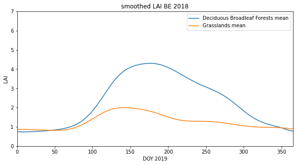
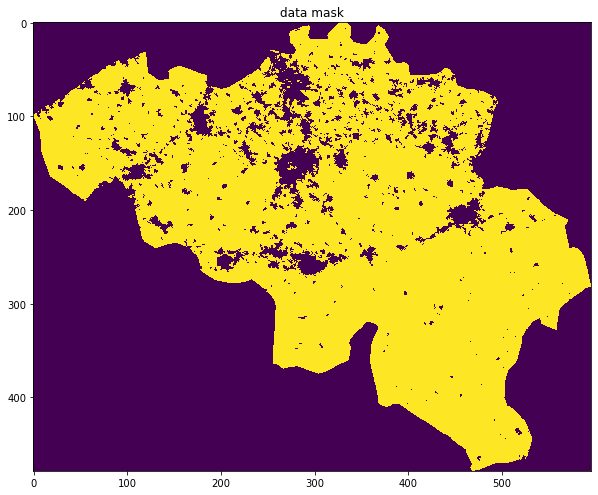
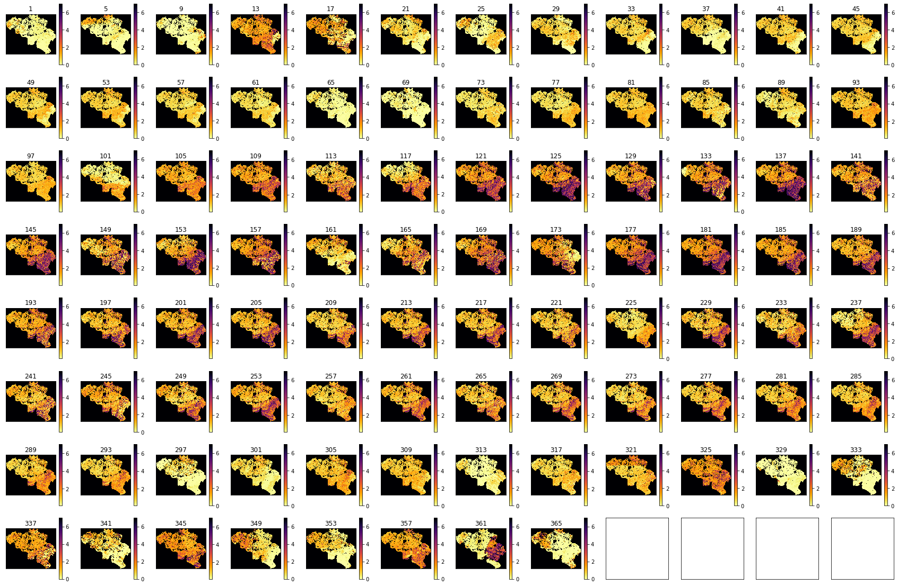
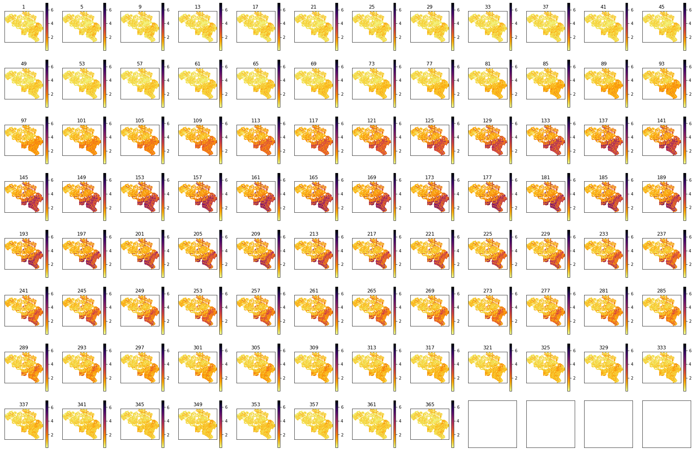

Formative Assessment: LAI : Answers to exercises
Exercise 1
Write a Python script to generate a combined LAI and land cover dataset, for a given year, tile set, and country
- In a file
work/lc_lai.py, write a function calledlc_laithat has has the following arguments:* tile : list of MODIS tile names e.g `['h17v03','h18v03','h17v04','h18v04']` * year : integer, e.g. `2018` * fips : a FIPS country code string e.g. `LU`
the following keyword options:
* sigma=5 : std dev for Gaussian smoothing filter (default 5)
and returns a dictionary with the following keys:
'Lai_500m' : regularised (interpolated) LAI: numpy float array of (Ndays,Nx,Ny)
'mask' : a mask True for valid pixels: numpy bool array of (Nx,Ny)
'LC_Type3' : Land cover: numpy byte array of (Nx,Ny)
'doy' : array of integers of the day of year the lai
- In the same file, write a function
write_datasetthat takes as argument:dataset : the LAI, mask and LC dataset returned by lc_lai ofile : str or Path object for output file
the following keyword options:
classy='Deciduous Broadleaf Forests' : name for LC_Type3 LC class
and saves the doy and mean LAI over the specified country to a CSV text file in ofile.
The function should also print out the number of samples for that land cover type (Hint: sum the combined valid/land cover mask), and not proceed further if there are no samples for the given LC class.
- In the same file, write a function
main()that runs a test oflc_laiandget_datasetfor the following scenario:tile : `['h17v03','h18v03','h17v04','h18v04']` year : `2018` fips : 'BE' (Belgium)
and them reads and prints the doy and mean LAI from the file you have saved.
- Run your script in a jupyter notebook, and and plot the dataset returned.
Hint, use existing codes as far as possible, and re-purpose to this task. For example, you may find it convenient to use geog0111.modis_annual to get teh MODIS dataset.
Rather than writing one huge function, you may find it useful to write a series of functions that you put together into the function lc_lai. For example, you might build a function to get the clipped LAI dataset, anothe to do the interpolation, another to get the land cover data, and another to build the mask.
If you build the code as a series of smaller functions like this, test them as you go along. e.g. test that the function that getrs the LAI dataset works as intended before going on to the others. Check the data returned by looking at its shape, and perhaps doing some plots. You might find it useful to put all of thes tests into a notebook, so they become repeatable.
Try to put checks into your code to ensure it is operating as intended.
Hint: if you modularise your code in this way, the bare bones of the function will be as simple as something like:
def lc_lai(tile,year,fips,sigma=5):
lc = get_lc(year,tile,fips)
lai,std,doy = get_lai(year,tile,fips)
weight = get_weight(lai,std)
interpolated_lai = regularise(lai,weight,sigma)
mask = make_mask(interpolated_lai)
odict = {
'Lai_500m' : lai,
'LC_Type3' : lc,
'mask' : mask,
'doy' : doy
}
return odict
You can then concentrate on writing and testing the various sub-codes get_lc, get_lai etc. We suggest that you start with defining get_lc(year,tile,fips) as above, and work your way through the sub-functions. You will find code to achieve most of these items in the notes.
Don't forget to make the file executable. Don't forget to import all of the packages you will use.
#!/usr/bin/env python
# -*- coding: utf-8 -*-
# import required package(s)
from geog0111.modis_annual import modis_annual
import pandas as pd
from geog0111.modis import Modis
import scipy
import scipy.ndimage.filters
import numpy as np
import gdal
from pathlib import Path
'''
lc_lai
Purpose:
generate a combined LAI and land cover dataset, for a given year, tile set, and country
Formative Assessment: LAI
Author: P. Lewis
Email: p.lewis@ucl.ac.uk
Date: 28 Aug 2020
In a file work/lc_lai.py, write a function called lc_lai that has has the following arguments:
tile : list of MODIS tile names e.g ['h17v03','h18v03','h17v04','h18v04']
year : integer, e.g. 2018
fips : a FIPS country code string e.g. LU
the following keyword options:
sigma=5 : std dev for Gaussian smoothing filter (default 5)
and returns a dictionary with the following keys:
'Lai_500m' : regularised (interpolated) LAI: numpy float array of (Ndays,Nx,Ny)
'mask' : a mask True for valid pixels: numpy byte array of (Nx,Ny)
'LC_Type3' : Land cover: numpy byte array of (Nx,Ny)
'''
def get_lai_data(year,tile,fips):
'''
Get the LAI dataset for fips, tile and year
and return lai,doy
'''
# load some data
sds = ['Lai_500m','LaiStdDev_500m']
product = 'MCD15A3H'
warp_args = {
'dstNodata' : 255,
'format' : 'MEM',
'cropToCutline' : True,
'cutlineWhere' : f"FIPS='{fips}'",
'cutlineDSName' : 'data/TM_WORLD_BORDERS-0.3.shp'
}
mfiles = modis_annual(year,tile,product,\
sds=sds,warp_args=warp_args)
# scale it
lai = mfiles['Lai_500m'] * 0.1
std = mfiles['LaiStdDev_500m'] * 0.1
# doy from filenames
doy = np.array([int(i.split('-')[1]) for i in mfiles['bandnames']])
return lai,std,doy
def get_lc(year,tile,fips):
'''
Return LC mask for year,tile,fips
'''
kwargs = {
'tile' : tile,
'product' : 'MCD12Q1',
}
doy = 1
# get the LC data
modis = Modis(**kwargs)
warp_args = {
'dstNodata' : 255,
'format' : 'MEM',
'cropToCutline' : True,
'cutlineWhere' : f"FIPS='{fips}'",
'cutlineDSName' : 'data/TM_WORLD_BORDERS-0.3.shp'
}
# specify day of year (DOY) and year
lcfiles = modis.get_modis(year,doy,warp_args=warp_args)
# get the item we want
g = gdal.Open(lcfiles['LC_Type3'])
# error checking
if not g:
print(f"cannot open LC file {lcfiles['LC_Type3']}")
return None
lc = g.ReadAsArray()
del g
print(f"class codes: {np.unique(lc)}")
return lc
# get_weight(lai)
def get_weight(lai,std):
std[std<1] = 1
weight = np.zeros_like(std)
mask = (std > 0)
weight[mask] = 1./(std[mask]**2)
weight[lai > 10] = 0.
return weight
# regularise
def regularise(lai,weight,sigma):
''' return regulaised dataset along axis 0'''
x = np.arange(-3*sigma,3*sigma+1)
gaussian = np.exp((-(x/sigma)**2)/2.0)
numerator = scipy.ndimage.filters.convolve1d(lai * weight, gaussian, axis=0,mode='wrap')
denominator = scipy.ndimage.filters.convolve1d(weight, gaussian, axis=0,mode='wrap')
# avoid divide by 0 problems by setting zero values
# of the denominator to not a number (NaN)
denominator[denominator==0] = np.nan
interpolated_lai = numerator/denominator
return interpolated_lai
def make_mask(interpolated_lai):
'''return True where there is no nan in axis 0'''
return ~np.isnan(np.sum(interpolated_lai,axis=0))
# define a function lc_lai
def lc_lai(tile,year,fips,sigma=5):
'''
generate a combined LAI and land cover dataset,
for a given year, tile set, and country (defined by FIPS)
Arguments:
tile : list of MODIS tile names e.g ['h17v03','h18v03','h17v04','h18v04']
year : integer, e.g. 2018
fips : a FIPS country code string e.g. LU
Options:
sigma=5 : std dev for Gaussian smoothing filter (default 5)
Output:
a dictionary with the following keys:
'Lai_500m' : regularised (interpolated) LAI: numpy float array of (Ndays,Nx,Ny)
'mask' : a mask True for valid pixels: numpy bool array of (Nx,Ny)
'LC_Type3' : Land cover: numpy byte array of (Nx,Ny)
'''
lc = get_lc(year,tile,fips)
lai,std,doy = get_lai_data(year,tile,fips)
weight = get_weight(lai,std)
interpolated_lai = regularise(lai,weight,sigma)
mask = make_mask(interpolated_lai)
odict = {
'Lai_500m' : interpolated_lai,
'LC_Type3' : lc,
'mask' : mask,
'doy' : doy
}
return odict
def get_lc_code(classy='Deciduous Broadleaf Forests'):
'''
Return lc_Type3 code for str classy
'''
# get the code for the LC class we want
lc_Type3 = pd.read_csv('data/LC_Type3_colour.csv')
code = int(lc_Type3['code'][lc_Type3['class'] == classy])
return code
def write_dataset(dataset,ofile,classy='Deciduous Broadleaf Forests'):
'''
get dataset for given classy and save to CSV in ofile
'''
land_cover = dataset['LC_Type3']
lai = dataset['Lai_500m']
valid_mask = dataset['mask']
doy = dataset['doy']
# select pixels from combined masks
code = get_lc_code(classy=classy)
code_mask = (land_cover == code)
mask = np.logical_and(code_mask,valid_mask)
#
# The function should also print out the number
# of samples for that land cover type
# (Hint: sum the combined valid/land cover mask),
# and not proceed further if there are no samples
# for the given LC class.
print(f'Class {classy} code {code} has {mask.sum()} samples')
if mask.sum():
# mean over axis 1
mean_lai = np.mean(lai[:,mask],axis=(1))
df = pd.DataFrame({'doy':doy,'Lai_500m':mean_lai})
# save as csv without the index
else:
print(f"no data in Class {classy}")
# return something appropriate
df = pd.DataFrame({'doy':doy,'Lai_500m':[[0]]*len(doy)})
# save to CSV
df.to_csv(ofile,index=False)
# define a function main() to call when a script
def main():
tile = ['h17v03','h18v03','h17v04','h18v04']
year = '2018'
fips = 'BE'
classy='Deciduous Broadleaf Forests'
#classy='Grasslands'
ofile = Path(f'work/mydata.{fips}.{year}.{"_".join(tile)}.{classy.replace(" ","_")}.csv')
print(ofile)
dataset = lc_lai(tile,year,fips,sigma=5)
write_dataset(dataset,ofile,classy=classy)
# read ofile
df1=pd.read_csv(ofile)
print(df1)
# calls main() if the file is run as a Python script
if __name__ == "__main__":
main()
work/mydata.BE.2018.h17v03_h18v03_h17v04_h18v04.Grasslands.csv
class codes: [ 0 1 3 4 5 6 7 9 10 255]
we dont need to process MCD15A3H._h17v03_h18v03_h17v04_h18v04_.2018
Class Grasslands code 1 has 19330 samples
doy Lai_500m
0 1 0.876056
1 5 0.868610
2 9 0.864695
3 13 0.860147
4 17 0.856711
.. ... ...
87 349 0.952634
88 353 0.938344
89 357 0.919450
90 361 0.903372
91 365 0.889352
[92 rows x 2 columns]
from pathlib import Path
import matplotlib.pyplot as plt
tile = ['h17v03','h18v03','h17v04','h18v04']
year = '2018'
fips = 'BE'
# plot
x_size,y_size=(10,5)
fig, axs = plt.subplots(1,1,figsize=(x_size,y_size))
axs.set_title(f'smoothed LAI {fips} {year}')
# ensure the same scale for all
axs.set_ylim(0,7)
axs.set_ylabel('LAI')
axs.set_xlabel('DOY 2019')
axs.set_xlim(0,365)
for c in ['Deciduous Broadleaf Forests','Grasslands']:
# read the datasets
ofile = Path(f'work/mydata.{fips}.{year}.{"_".join(tile)}.{c.replace(" ","_")}.csv')
df1=pd.read_csv(ofile)
x = df1['doy']
lai = df1['Lai_500m']
axs.plot(x,lai,label=f"{c} mean")
axs.legend(loc='upper right')
<matplotlib.legend.Legend at 0x7fa9d7372fd0>

# check things work as expected is quite useful
tile = ['h17v03','h18v03','h17v04','h18v04']
year = '2018'
fips = 'BE'
sigma = 5
lc = get_lc(year,tile,fips)
lai,std,doy = get_lai_data(year,tile,fips)
weight = get_weight(lai,std)
interpolated_lai = regularise(lai,weight,sigma)
mask = make_mask(interpolated_lai)
class codes: [ 0 1 3 4 5 6 7 9 10 255]
we dont need to process MCD15A3H._h17v03_h18v03_h17v04_h18v04_.2018
x_size,y_size=(10,10)
fig, axs = plt.subplots(1,1,figsize=(x_size,y_size))
x = doy
axs.imshow(mask,interpolation='nearest')
axs.set_title('data mask')
Text(0.5, 1.0, 'data mask')

import matplotlib.pyplot as plt
shape=(8,12)
x_size,y_size=(30,20)
fig, axs = plt.subplots(*shape,figsize=(x_size,y_size))
axs = axs.flatten()
plt.setp(axs, xticks=[], yticks=[])
for i in range(lai.shape[0]):
im = axs[i].imshow(lai[i],vmax=7,cmap=plt.cm.inferno_r,\
interpolation='nearest')
axs[i].set_title(str(doy[i]))
fig.colorbar(im, ax=axs[i])

import matplotlib.pyplot as plt
shape=(8,12)
x_size,y_size=(30,20)
fig, axs = plt.subplots(*shape,figsize=(x_size,y_size))
axs = axs.flatten()
plt.setp(axs, xticks=[], yticks=[])
for i in range(interpolated_lai.shape[0]):
im = axs[i].imshow(interpolated_lai[i],vmax=7,cmap=plt.cm.inferno_r,\
interpolation='nearest')
axs[i].set_title(str(doy[i]))
fig.colorbar(im, ax=axs[i])
